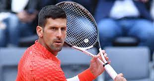
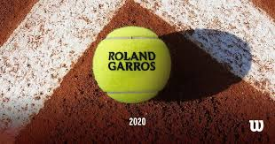
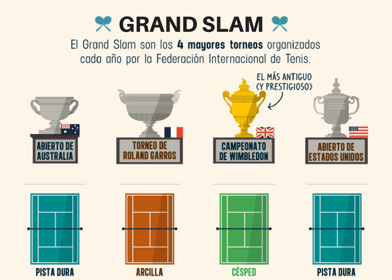
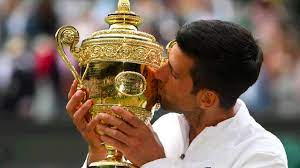

(Te dejo la wikipedia por si te interesa saber mas sobre él)
 Novak Djokovic es un tenista profesional serbio que ocupa la primera posición del ranking ATP.
Es considerado el mejor tenista de la historia en pista dura y uno de los mejores de todos los tiempos.
Hasta la fecha, es ganador de 22 torneos de Grand Slam, plusmarca histórica que lo ubica en el primer lugar del palmarés junto al español Rafael Nadal.
Ha conseguido vencer el Abierto de Australia en diez ocasiones (siendo el tenista que más veces lo ha conseguido en toda la historia), dos veces el Torneo de Roland Garros,
siete veces el Campeonato de Wimbledon y tres veces el Abierto de Estados Unidos. Ha sido heptacampeón mundial por la ITF: 2011, 2012, 2013, 2014, 2015, 2018 y 2021.
Es el poseedor del récord de más semanas como Número 1 del tenis, con 387 semanas en 12 temporadas diferentes, récord en la historia de la ATP, además de ser el único tenista en
toda la en toda la Era Abierta en acabar
el año como número 1 del mundo durante siete años seguidos (2011, 2012, 2014, 2015, 2018, 2020 y 2021), actualmente le lidera el puesto 3 de la ATP (Asociación de Tenistas Profesionales).
Aca les dejo la final de Djokovic contra Tsitsipas en el Torneo de Australian Open 2023:
Es el primer tenista, desde el australiano Rod Laver en 1969, en conquistar los cuatro Grand Slams de forma consecutiva, aunque no en año natural (desde Wimbledon 2015 hasta Roland Garros 2016), convirtiéndose en el único hombre en toda la historia en ser campeón de los cuatro torneos Majors a la vez en tres superficies distintas. Adicionalmente, también es el primer tenista masculino desde Rod Laver que ha logrado los tres primeros Grand Slams de la temporada: Abierto de Australia, Roland Garros y Wimbledon, siendo además el primero que lo logra en tres superficies distintas (2021). Es el quinto tenista en la Era Abierta que logra el denominado "Channel Slam", es decir, ganar el doblete Roland Garros y Wimbledon (2021), tambien es el cuarto tenista en toda la Era Abierta que consigue el doblete Abierto de Australia-Roland Garros, además de ser el único en conseguirlo en dos ocasiones: En 2016 y 2021. Es el octavo jugador en la Era Abierta que completa el doblete en Wimbledon y el Abierto de Estados Unidos: 2011, 2015 y 2018. El serbio es el jugador masculino con más presencias en finales de Grand Slam en la historia, con 33. Es el primer jugador de la historia con ocho presencias en dos finales de Grand Slam sobre dos superficies diferentes (Outdoor Hard y Outdoor Grass), y el único con más de ocho finales en tres Majors diferentes: Abierto de Australia (10), Wimbledon (8) y Abierto de Estados Unidos (9), también es el único tenista de la historia con diez presencias en semifinales de los cuatro torneos Majors. Es el segundo en la lista de jugadores con más victorias, con 341, sólo superado por Roger Federer, con 369. Es el único tenista en toda la historia con más de 81 victorias en los cuatro torneos de Grand Slam: Abierto de Australia (89), Roland Garros (85), Wimbledon (86) y Abierto de Estados Unidos (81). Posee el récord de más victorias consecutivas en Grand Slam en la Era Abierta, con 30 (2015-2016), y es el primer tenista que logró encadenar cuatro rachas diferentes de 25 victorias consecutivas o más en Grand Slam desde el inicio de la Era Abierta: 27 (2011-2012), 30 (2015-2016), 26 (2018-2019) y 27 (2021). Es uno de los dos tenistas, junto con Roger Federer, en ganar tres Grand Slams el mismo año en tres años diferentes: 2011, 2015 y 2021. Es el primero en la Era Abierta en haber ganado un título de Grand Slam en tres décadas diferentes. Es el jugador con mayor número de títulos Masters 1000, con 38. Es el único tenista en toda la Era Abierta en lograr el Career Golden Masters, es decir, ganar los nueve Masters 1000 del circuito, el único en ganarlos todos al menos dos veces, el único que ha ganado seis títulos en una sola temporada: Indian Wells, Miami, Montecarlo, Roma, Shanghái y París-Bercy (2015) y el único que ha ganado cinco títulos consecutivos: Indian Wells, Miami, Madrid (no participó en Montecarlo), Roma y Canadá (2011). Es el único jugador en la Era Abierta que ha ganado el Abierto de Australia y los primeros tres Masters 1000 de la temporada (2015). Es el segundo jugador, después de Andre Agassi en 1999, en ganar el doblete Roland Garros-París (2021). Es el único que ha ganado al menos seis veces un Masters 1000, en todas las superficies disponibles en el circuito ATP: Miami, Roma y París. En la categoría de los llamados "Grandes Títulos" (Grand Slam, All Tour Finals, Masters, Juegos Olímpicos), Novak Djokovic es el líder, con 66 (récord de 97 finales). Asimismo, es el tenista con más títulos (46) en grandes torneos sobre superficie dura: 13 Grand Slams, 27 Masters y 6 ATP Finals (récord de 64 finales), y es el jugador con más títulos obtenidos (10) en grandes torneos en una sola temporada: 3 Grand Slams, 6 Masters (récord de 8 finales disputadas) y el ATP Finals (2015). Es el único que ha ganado seis títulos o más en seis "Big Tournaments" diferentes y el único en lograrlo en las tres superficies: Abierto de Australia (Outdoor Hard), Wimbledon (Outdoor Grass), Miami (Outdoor Hard), Roma (Outdoor Clay), París y ATP Finals (Indoor Hard)
 Novak Djokovic nació el 22 de mayo de 1987, en Belgrado, Yugoslavia. Su padre se llama Srdjan, de origen serbio, gran jugador de tenis de mesa y destacado en el esquí, y su madre Dijana, es de origen croata. Tiene dos hermanos menores, Marko y Djordje, que también son jugadores de tenis con aspiraciones profesionales. Empieza a jugar al tenis a la edad de cuatro años. En el verano de 1993, a los seis años de edad, la leyenda yugoslava Jelena Genčić ve jugar a Đoković. Al ver al joven talentoso y dedicado, ella declara: "Este es el mayor talento que he visto desde Mónica Seles". Genčić trabaja con Đoković durante seis años antes de darse cuenta de que, debido a su rápido desarrollo, ir al extranjero en busca de un mayor nivel de competencia sería la mejor opción para su futuro como tenista de alto nivel. Con ese fin se puso en contacto con Nikola Pilic y en septiembre de 1999, a los 12 años, se traslada a la academia de Pilic en Oberschleißheim, Alemania. A los 14 años empieza su carrera internacional, ganando campeonatos en Europa, tanto en individuales como en dobles, y en competiciones por equipos. Đjoković también es conocido por su gran sentido del humor fuera de las canchas y por las imitaciones de sus compañeros, muchos de quienes son sus amigos. Esto se hizo evidente para el mundo del tenis después de su victoria en 2007 en el Abierto de Estados Unidos en los cuartos de final frente a Carlos Moyá, donde entretuvo a la audiencia con imitaciones de Rafael Nadal y María Sharápova. También hace una impresionante imitación del gran tenista estadounidense John McEnroe después de su último partido preliminar en el Abierto de Estados Unidos 2009. Luego jugarían un breve partido con McEnroe para el deleite de la audiencia. Es debido a su personalidad jovial que se gana el apodo de "Djoker", un acrónimo de su apellido y el comodín de palabras. Novak Djokovic es un miembro del club de la "Champions for Peace", una organización integrada por un grupo de famosos atletas de élite comprometidos a servir a la paz en el mundo a través del deporte, con sede en Mónaco. Al igual que otros tenistas como Roger Federer, Djokovic habla cinco idiomas: castellano, serbio, inglés, alemán e italiano. Se encuentra trabajando en su francés y también ha expresado que le gustaría aprender a hablar chino, ya que en China es muy querido y respetado. El 28 de abril de 2011, en Belgrado, el patriarca Ireneo I de Serbia concede a Novak Djokovic la Orden de San Sava de clase I, la más alta condecoración de la Iglesia ortodoxa serbia. La orden le es otorgada porque demuestra su amor por la Iglesia y porque presta asistencia a la población serbia, iglesias y monasterios de la Iglesia ortodoxa de serbia de Kosovo y Metohija. También se le conoce con el sobrenombre de Nole. Actualmente reside en Montecarlo, Mónaco. Es un reconocido seguidor del AC Milan. En adición, estudia piano con la famosa Lola Astanova. Por respeto a los animales y conciencia medioambiental, sigue una dieta vegetariana estricta que además afirma que le ha ayudado con su celiaquía.
Esta enfermedad es una afección autoinmune que daña al revestimiento del intestino delgado. Este daño proviene de una reacción a la ingestión de gluten. Esta es una sustancia que se encuentra en el trigo, la cebada, el centeno y posiblemente la avena (T.A.C.C). Y también en alimentos elaborados con estos ingredientes.
Esta etiqueta significa que es apto para un seliaco (como Djokovic).
![]()